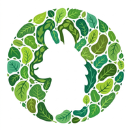

Inicia sesión para comenzar
Elige tu local para comenzar
—
—
Apagar algo acá no impide que alguien lo haga por otro lado. Es un seguro contra el resbalón.
—
Guarda una foto del stock actual con la fecha de hoy. Así queda el registro del día y se puede consultar o descargar después.
Lo que sale de acá baja en Angamos y sube en Plaza cuando allá lo confirmen.
A DÓNDE VA
Cafés que no tienen Llamita. Se les manda con una hoja impresa.
Busca acá el producto de bodega y dile con cuál va en cada local.
Productos del local que al recibirse no le bajan nada a bodega.
Elige el producto que se vende en Fudo y qué insumos descuenta del inventario.
Se agregará a esta sede